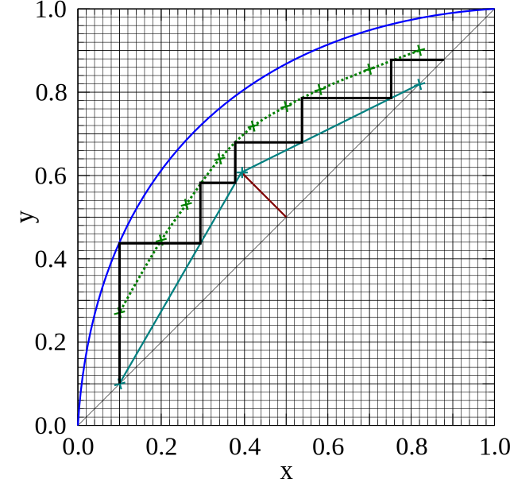

Varying Stage Efficiencies and Feed Location
-
In the previous lecture, we discussed
column
efficiencies
and how to use them:
- The overall column efficiency, $E_O$, is the ratio of ideal trays to real trays in the column.
- The Murphree tray efficiency, $E_M$, is the effectiveness of a single real tray when compared to a ideal tray.
- The Murphree point efficiency, $E_P$, is the efficiency of a single point on a tray. This is only useful when considering the flow on a tray in detail.
- A constant Murphree tray efficiency is relatively easy to use, forming an “effective” VLE line below the true VLE line, which we called the Murphree line.

- But what is happening at the bottom of the stepping when using the Murphree efficiency?
- This is the first example of a case where we have different efficiencies for different parts of the column.
- The bottom stage is usually a re-boiler stage, and it is often assumed to have a Murphree efficiency of $E_M=1.0$ !
- This is because the re-boilers actually generate vapour from the liquid.
- On trays, you are contacting vapour and liquid phases to try to get them to come into equilibrium.
- Generating vapour will typically be more effective at achieving equilibrium concentrations.

- So the re-boiler stage shouldn't use the Murphree line, but should instead go to the VLE line !
- But we must be careful where we start our stepping using the murphree line. We must use whole numbers of stages as they correspond to real trays.
- If we start stepping from the top, we may significantly over-design our column.

- Its important to remember that the start point of stepping can effect the final result if the Murphree tray/stage efficiencies vary.
- Here we've seen the difference that the re-boiler efficiency can make when using the Murphree tray efficiency.
- How does having a ideal reboiler stage effect overall efficiency calculations?
- Let's double check how the overall efficiency works when considering the re-boiler as an ideal stage.
- We start off by calculating how many ideal stages are required for the design.
- Here we need around 2.6 ideal stages to perform the separation.
- But one ideal stage is provided by a re-boiler, so we only need 1.6 ideal trays!
- Assuming we have an overall efficiency of $E_O=0.4$, this would give us $1.6/0.4=4$ real stages and a reboiler stage!
- Contrast this to our previous design with a Murphree tray efficiency of $E_M=0.5$.

- Let's consider the distillation trays in a real distillation column.
- The tray's in a column will actually vary in type, from random/structured packing, to sieve/valve/chimney trays.
- They will vary as the viscosity of the column mixture changes with concentration (compare the heavy components of crude to the light paraffin's).
- This means the efficiency will vary significantly in the column.
- The efficiency will also change due to the difference in vapour and liquid flow rates in the stripping and enrichment sections due to the addition of feed.

- The most complex case we will consider in this course is that we have two Murphree efficiencies.
- In the upper enrichment section, we might have a higher efficiency due to the increased vapour flow-rates, and lower liquid flow-rates resulting in longer liquid tray residency times.
- Let's do the previous Murphree example with two different tray efficiencies…


-
In summary, for efficiencies:
- Remember that the re-boiler is nearly ideal, so it should always contact the VLE line.
- You can have varying tray efficiencies in the column, and the simplest example of this is when the enrichment and stripping efficiencies are different.
- Always start stepping from the bottom when using the Murphree tray efficiency, as this uses the ideal re-boiler stage to its maximum, and gives the minimum real-tray design.
- The last bit of ambiguity to clarify in distillation design is which tray is the feed tray?
- The feed tray is defined as the tray below where the feed enters the column.
- The liquid falling down from the feed point will land on this tray, and the feed vapour will join the rising vapour from the tray.
- Therefore, the feed tray is the tray which connects the two operating lines.